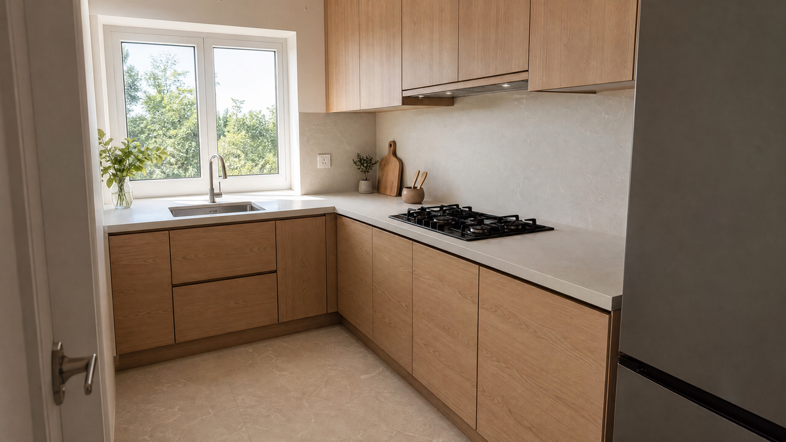
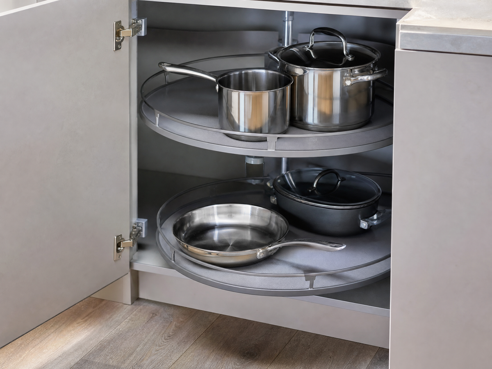
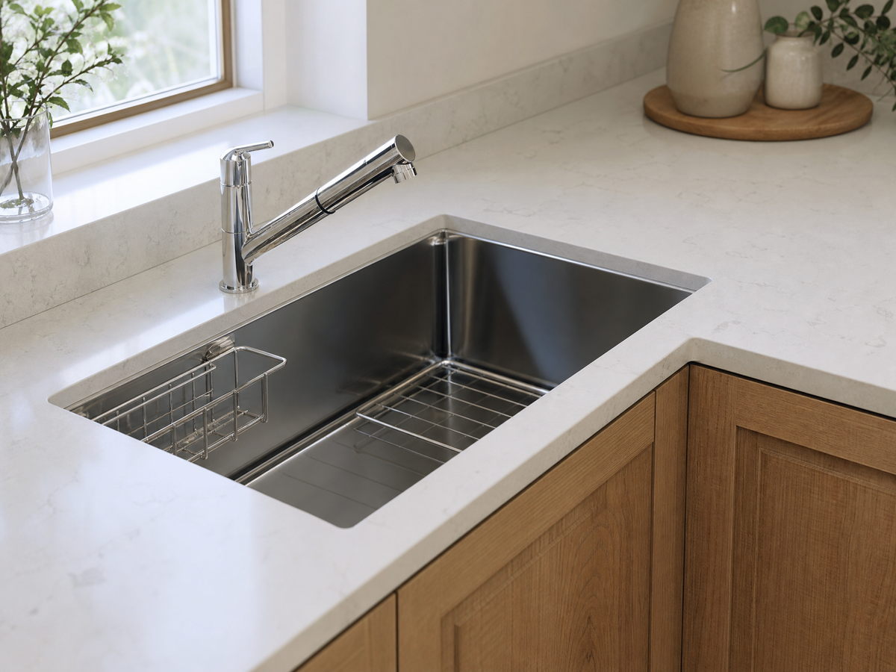
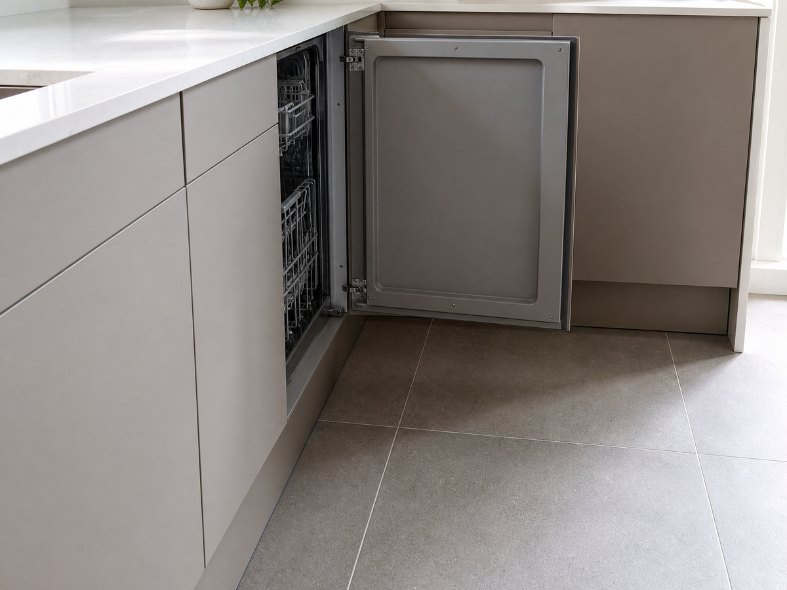

угловой гарнитур требует двух стен от 1800 и 2100 мм; глухой угол 900×900 мм забирает до 0,28 м³ объёма, и без карусели за 6 000–14 000 руб. туда не добраться; посудомойке нужно 600 мм на вылет дверки плюс 500 мм на человека, а мойку ставят в угол только со скосом 700–800 мм по фронту. Переделка неправильного угла после монтажа столешницы — 3 500–15 000 руб.
Когда угловая планировка действительно экономит метры
Угловой гарнитур выигрывает не сам по себе, а когда две смежные стены дают две полноценные рабочие линии. Считается просто: угловой модуль занимает по 900 мм на каждой стене, остальное набирается модулями 600 мм. Если после угла остаётся меньше 600 мм, там помещается только узкая тумба 300–400 мм или ничего.
| Длина стены | Остаток после угла 900 мм | Что встаёт в остаток | Рабочая поверхность |
|---|---|---|---|
| 1500 мм | 600 мм | одна тумба 600 мм | 250–350 мм, готовить неудобно |
| 1800 мм | 900 мм | мойка 600 мм + узкая тумба 300 мм | 400–600 мм |
| 2100 мм | 1200 мм | мойка 600 мм + посудомойка 600 мм | 500–700 мм |
| 2400 мм | 1500 мм | мойка 600 мм + посудомойка 600 мм + тумба 300 мм | 700–900 мм |
| 2700 мм | 1800 мм | мойка 600 мм + посудомойка 600 мм + плита 600 мм | 800–1000 мм |
Кухня 6–8 м² с гарнитуром 3,0 + 2,4 м даёт 4,5–5,0 п.м фронта: это 8–10 модулей и 1,2–1,5 м столешницы под работу. Для 9–12 м² рабочий вариант — 3,6 + 3,0 м, тогда в длинную линию входят мойка, посудомойка и плита с зазорами по 150–200 мм.

Когда угол лучше не делать
Если одна стена короче 1500 мм, угловой модуль съест треть линии и оставит 600 мм — это одна тумба. В такой кухне прямая линия 2,4–3,0 м с пеналом под технику полезнее: фронт тот же, а мёртвого угла нет. Второй случай — дверь в углу: створка должна открываться на 90–100°, и если она упирается в гарнитур, остаётся 300–400 мм прохода вместо 900.
Угол: четыре способа собрать и сколько это стоит
Угловой модуль 900×900 мм — это 0,81 м² площади пола и около 0,28 м³ объёма, из которых без механизма доступна меньше трети. Вопрос не «делать ли угол», а чем его начинить.
| Вариант | Цена 2026 | Доступ к объёму | Когда ставить |
|---|---|---|---|
| Глухая угловая тумба 900×900 мм | входит в цену гарнитура | 25–30%, только ближняя часть | бюджет, угол занят мойкой |
| Карусель на два круга | 6 000–14 000 руб. | 75–80% | основной вариант под кастрюли |
| Карго-карусель с полным выкатом | 12 000–22 000 руб. | 85% | угол под тяжёлую утварь, без мойки |
| Г-образный модуль со скосом | +8 000–15 000 руб. к гарнитуру | мойка по диагонали | узкая кухня 1,8–2,1 м |
Диаметр круга карусели — 700–800 мм при корпусе 900 мм: круг не должен цеплять фасад. Механизм крепится к центральной стойке, поэтому дно и полку углового модуля усиливают — на ЛДСП 16 мм с нагрузкой 20–25 кг полка прогибается за 2–3 года.

Г-образный модуль со скосом решает другую задачу: он ставит мойку по диагонали и убирает острый внутренний угол. Цена — плюс 8 000–15 000 руб. к гарнитуру, зато столешница идёт одной деталью без стыка в мокрой зоне.
Мойка: в угол или со сдвигом на 150–300 мм
Мойка в углу выглядит логично, а работать за ней неудобно: вы стоите под 45°, плечо упирается в стену, смеситель перекрывает окно или соседний шкаф. Проверяется просто — от центра чаши до ближайшей стены должно быть 900–1000 мм, это ширина плеча с запасом.
| Тип мойки | Ширина по фронту | Глубина чаши | Где уместна |
|---|---|---|---|
| Диагональная угловая | 700–800 мм | 180–200 мм | кухня 1,8–2,1 м, угол без техники |
| Прямая 600 мм со сдвигом от угла | 600 мм | 180–200 мм | универсальный вариант |
| Узкая 450 мм | 450 мм | 160–180 мм | стена после угла 900 мм |
Сдвиг от угла на 150–300 мм даёт главное — доступ к сифону и смесителю. Запорная арматура и подводка должны быть в зоне, куда дотягивается рука. Уклон слива — 20–30 мм на метр (СП 30.13330.2020), труба 40–50 мм: при меньшем уклоне на стенках оседает жир, и через 8–12 месяцев появляется запах.

Под мойку идёт тумба 600–800 мм с корпусом 560 мм. Для посудомойки рядом с мойкой нужны те же 600 мм плюс 100 мм на шланги и слив, поэтому пару «мойка + посудомойка» планируют одной группой.
Вылеты дверок: главная причина тесной угловой кухни
Угловая кухня становится неудобной не из-за площади, а из-за вылетов. Дверка посудомойки 600 мм при открытии на 90° уходит вперёд на 500–600 мм и требует ещё 500 мм на человека, который наклоняется. Итого 1000–1100 мм свободного пола перед прибором.
| Прибор | Вылет дверки | Свободно перед прибором | Где нельзя ставить |
|---|---|---|---|
| Посудомойка 600 мм | 500–600 мм | 1000–1100 мм | вплотную к углу и к стене |
| Посудомойка 450 мм | 400–500 мм | 900–1000 мм | у прохода 800 мм |
| Духовой шкаф в колонне | 450–550 мм | 800–900 мм | рядом с плитой и мойкой |
| Угловой шкаф с распашными фасадами | 600 мм на каждую створку | по 600 мм с двух сторон | в проходе уже 900 мм |

Отдельная история — ручки. Две ручки-скобы на смежных фасадах в углу сталкиваются: между ними нужно 20–40 мм или ручка-профиль в торец. Мелочь на 300–600 руб., но замена фасада после ошибки — 4 000–9 000 руб.
Плита в углу — тоже риск. Сбоку нужны 150–200 мм, иначе ручка сковороды 500 мм не даёт поставить её на дальнюю конфорку, а сама кастрюля упирается в стену. Холодильник ставят с зазором 50–100 мм до стены под петли и открытием в сторону прохода.
Рабочий треугольник и проходы
Три вершины — холодильник, мойка, плита. Для гарнитура 3,0 + 2,4 м суммарно получается 3600–6600 мм, это рабочий диапазон. Больше 7000 мм — лишние метры на каждой готовке, меньше 3000 мм — вдвоём тесно.
| Участок | Минимум | Оптимум | Что будет при нарушении |
|---|---|---|---|
| Мойка — плита | 800 мм | 1200–1500 мм | брызги на плиту, некуда поставить кастрюлю |
| Холодильник — мойка | 1000 мм | 1200–2000 мм | дверца холодильника бьёт по мойке |
| Проход между линиями | 900 мм | 1000–1200 мм | двое не разойдутся, ящики не открыть |
| Плита — стена | 150 мм | 200–250 мм | ручки кастрюль упираются в стену |
| Столешница под работу | 600 мм | 900–1200 мм | некуда положить доску и продукты |
У совмещённой с гостиной кухни проход держат ближе к 1200 мм: по нему ходят, а не только готовят.
Электрика и вентиляция: что закладывают до стяжки
В угловой кухне техника стоит плотно, поэтому розетки за корпусами приборов — самая частая ошибка. Розетку для духовки и посудомойки ставят в соседний шкаф на высоте 150–300 мм от пола или в цоколь, с доступом без демонтажа прибора.
| Прибор | Мощность | Кабель | Автомат |
|---|---|---|---|
| Духовой шкаф | 2,5–3,6 кВт | 3×2,5 мм² | 16 А |
| Варочная панель, индукция или стеклокерамика | до 7,2 кВт | 3×6 мм² | 32 А |
| Посудомоечная машина | 2,2 кВт | 3×2,5 мм² | 16 А |
| Холодильник и розетки фартука | 0,3–1,5 кВт | 3×2,5 мм² | 16 А |
На группу мокрой зоны — УЗО 30 мА (СП 256.1325800.2016, ПУЭ 7, глава 7.1). Отдельные линии на духовку и варочную обязательны: при общей линии на 16 А два прибора по 3,6 кВт выбивают автомат на разогреве.
Вентиляция: воздухообмен кухни — 60 м³/ч с электроплитой и 90 м³/ч с газовой (СП 54.13330.2022). Угловой гарнитур часто перекрывает вентканал, а вытяжка стоит в углу — тогда приток идёт только из-под двери. Зазор за встроенной техникой 40–90 мм и решётка от 200 см² в цоколе решают проблему без переделки. Предел для ЛДСП и эмали — 40–50 °C.
Смета угловой кухни 2026: за что платят больше
Угловой гарнитур дороже прямой на 10–18% при том же метраже: два угловых модуля, стык столешниц и больше фурнитуры. Расчёт на кухню 3,0 + 2,4 м, то есть 5,4 п.м.
| Позиция | ЛДСП 16 мм | МДФ в эмали | Комментарий |
|---|---|---|---|
| Корпуса и фасады, 5,4 п.м | 97 000–140 000 руб. | 173 000–259 000 руб. | 18 000–26 000 и 32 000–48 000 руб./п.м |
| Столешница ЛДСП 38 мм | 11 000–16 000 руб. | 11 000–16 000 руб. | 2 000–3 000 руб./п.м |
| Столешница из кварцевого агломерата | 97 000–151 000 руб. | 97 000–151 000 руб. | 18 000–28 000 руб./п.м с вырезом |
| Карусель в угол | 6 000–14 000 руб. | 6 000–14 000 руб. | плюс 500–900 руб. за усиление дна |
| Монтаж и подключение | 18 000–30 000 руб. | 18 000–30 000 руб. | вырез под мойку 2 500–4 000 руб. |
Экономный вариант выходит 130 000–200 000 руб., средний с МДФ — 210 000–320 000 руб. Разница — в фасадах, а не в корпусах.
| Ошибка | Последствие | Цена исправления |
|---|---|---|
| Посудомойка вплотную к углу | дверка не открывается на 90° | перестановка модулей 8 000–15 000 руб. |
| Розетка за духовкой | прибор не выдвинуть без отключения | новая линия 4 000–9 000 руб. |
| Мойка без сдвига от угла | плечо упирается в стену | новая столешница 12 000–28 000 руб. |
| Стык столешниц без усиления | провис через 1–2 года | замена плиты 6 000–14 000 руб. |
| Глухой угол без механизма | 0,2 м³ объёма не используется | доработка 3 500–8 000 руб. |
Порядок работ: от замера до подключения
- Замер по трём линиям на каждой стене: у пола, на высоте 900 мм и у потолка. Расхождение 20–40 мм — норма для панельного дома, и его закрывают столешницей, а не наличником.
- Разметка мокрой зоны и техники: мойка, посудомойка, плита, духовка, холодильник. Сразу проверяют вылеты дверок на полу мелом.
- Электрика до стяжки: линии 3×2,5 и 3×6 мм², автоматы 16 и 32 А, УЗО 30 мА, розетки в соседних шкафах.
- Вода и канализация: подводка на 150–300 мм от пола, слив с уклоном 20–30 мм/м, вывод под посудомойку рядом с мойкой.
- Стяжка и плитка, затем повторный замер — гарнитур заказывают по финишному полу, иначе цоколь 100–150 мм не встанет.
- Монтаж корпусов от угла: сначала угловой модуль, потом линии в обе стороны. Столешницу ставят после проверки диагоналей.
- Подключение техники и проверка: посудомойка на холостом цикле, вытяжка на всех скоростях, ревизия сифона через 2–3 дня.
Чек-лист перед заказом гарнитура
- Обе стены от 1800 и 2100 мм, после угла 900 мм остаётся не меньше 600 мм.
- Мойка сдвинута от угла на 150–300 мм или взята диагональная 700–800 мм.
- Перед посудомойкой 1000–1100 мм свободного пола, дверка открывается на 90°.
- Плита не вплотную к стене: зазор 150–200 мм под ручки кастрюль.
- В углу карусель или карго, дно усилено, диаметр круга 700–800 мм.
- Розетки не за корпусами приборов: соседний шкаф 150–300 мм от пола или цоколь.
- Линии 3×2,5 и 3×6 мм², автоматы 16 и 32 А, УЗО 30 мА.
- Зазор 40–90 мм за встроенной техникой, решётка от 200 см² в цоколе.
- Проход между линиями 1000–1200 мм, у совмещённой гостиной — не меньше 1000 мм.
Частые вопросы
Можно ли поставить посудомойку прямо в угол?
Нет. Дверке 600 мм нужно 500–600 мм вперёд и ещё 500 мм человеку, итого 1000–1100 мм свободного пола. В углу дверка упирается в соседнюю линию гарнитура и не открывается на 90°. Посудомойку ставят минимум через один модуль от угла.
Что лучше в угол: карусель или карго?
Карусель за 6 000–14 000 руб. даёт доступ к 75–80% объёма и подходит для кастрюль и крупной утвари. Карго-карусель за 12 000–22 000 руб. выкатывается полностью и держит 25–30 кг — её берут, когда в углу хранят тяжёлое. Для бюджетного варианта хватает карусели.
Какая минимальная длина стен для угловой кухни?
1800 мм на короткой и 2100 мм на длинной. При 1500 мм после углового модуля 900 мм остаётся 600 мм — это одна тумба, и угловая планировка проигрывает прямой линии 2,4–3,0 м.
Можно ли сделать мойку в углу на кухне 1,8 м?
Только диагональную 700–800 мм по фронту. Прямая мойка 600 мм в углу ставит вас под 45° к чаше, плечо упирается в стену, а смеситель перекрывает соседний шкаф. От центра диагональной чаши до стены должно быть 900–1000 мм.
Какой проход оставить, если кухня совмещена с гостиной?
1000–1200 мм. При 900 мм двое не разойдутся, ящики у стены открываются на 45–60°, а дверца посудомойки перекрывает проход целиком. Если места мало, лучше убрать одну линию, чем оставить проход 800 мм.
Нужен ли зазор между гарнитуром и стеной?
До стены достаточно 10–20 мм на неровность. Другое дело техника: за встроенной духовкой и посудомойкой оставляют 40–90 мм для циркуляции воздуха, а в цоколе — решётку от 200 см². Иначе корпус перегревается выше 40–50 °C, и кромка ЛДСП начинает отслаиваться.
Источники
Материал подготовлен с опорой на следующие документы и данные:
Дисклеймер
Материалы журнала «Ремонт на примерах» носят информационный характер. Приведённые цены, сроки и нормативы являются ориентировочными: они зависят от региона, состояния объекта, уровня исполнителей и текущей рыночной ситуации, поэтому не могут служить точной сметой или гарантией результата. Перед началом работ проконсультируйтесь со специалистами и проверяйте актуальные требования нормативных документов. Редакция не несёт ответственности за решения, принятые на основании этих материалов.